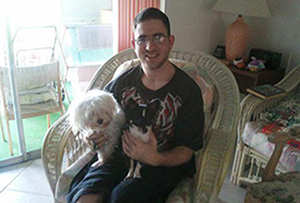

Eric's Pet Service's, Inc. has been providing love and care to pets since 2007. We are the company to call if you are working long hours or out of town. Our pets are more than just pets, they are our family members and we want the best care for them. I have been taking care of pets all of my life. I have many years experience with dogs, cats, birds, fish, etc. I Have you ever dreaded the thought of putting your dog in a kennel while you are of of town? Now you don't need to. We will come over your house 2 - 3 times a day to walk your dogs so they will never have to leave their home and they will get walked, fed, and played with. We can even come over to check on your cats or any other animals you might have. We understand that your pets are apart of your family so we will even take pictures and/or video of them and send them to you via text or email so you know how they are doing and your vacation will be stress free.
